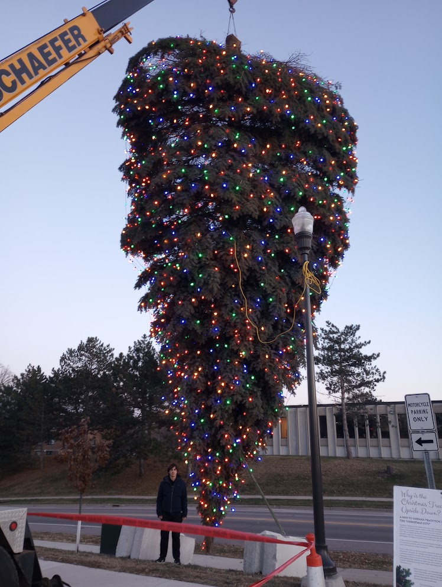

Working on Projects
I enjoy keeping myself busy with small projects. I like the process of planning, learning, and building — tackling hands-on tasks that make a visible difference. Right now, I'm stripping and refinishing the trim in an old house as part of a dining room remodel. It's detailed work that requires patience, but seeing the wood come back to life is incredibly rewarding.
Exploring Weird Places
I love finding out-of-the-ordinary spots across the state — odd landmarks, hidden corners, and places with unique stories. They're always interesting to see, and I enjoy learning the history behind them. New Ulm, especially, seems to have something unexpected every time I visit. In the summer, they haul in around 10 tons of sand downtown for a massive volleyball tournament. Another time, people were tossing turkeys off a roof. And on a different visit, a guy in a bear costume was dancing on a roof to raise money for Coats for Kids. It's those quirky moments that make exploring so fun.

Mountain Adventures
Another place I got to explore was living in a mountain in Colorado over the summer. I saw that amazing alpine glow when I got up around 5:30 one morning. There's something magical about being high up in the mountains when the first light hits the peaks, creating that incredible golden glow that seems to set the whole landscape on fire. It's moments like these that remind me why I love exploring and discovering new places - you never know what breathtaking beauty you might find when you're willing to wake up early and venture out.